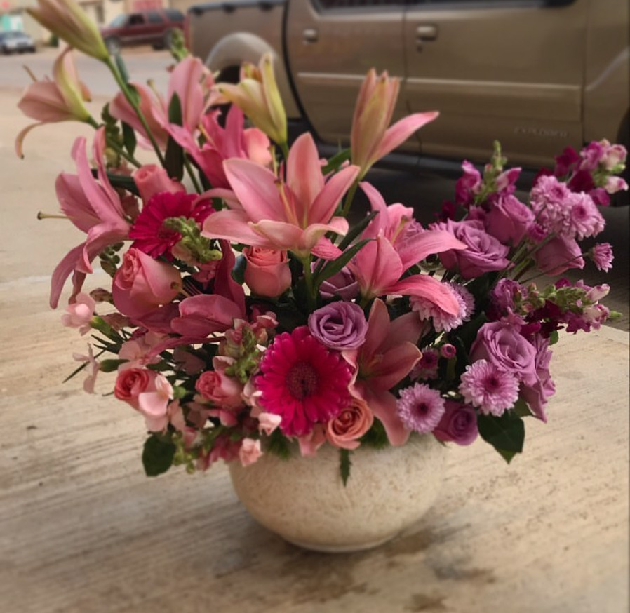
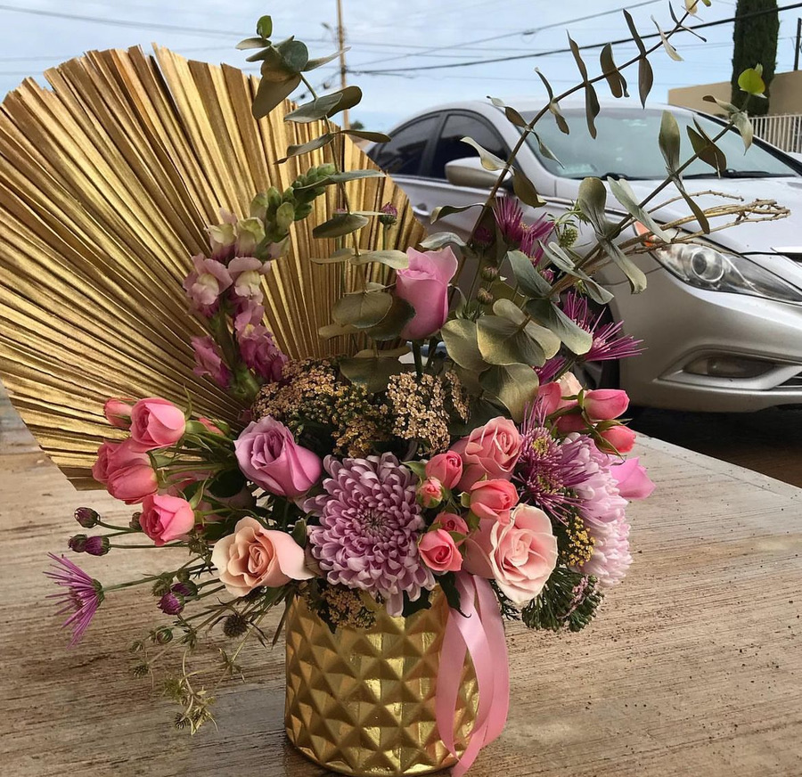
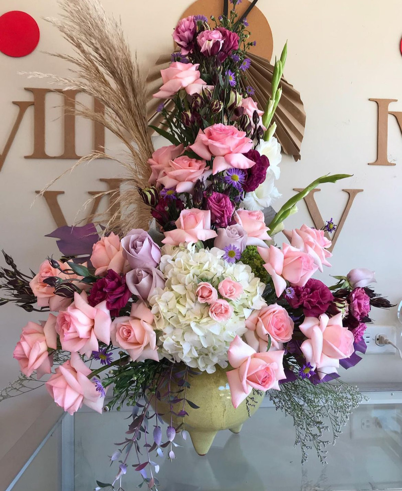
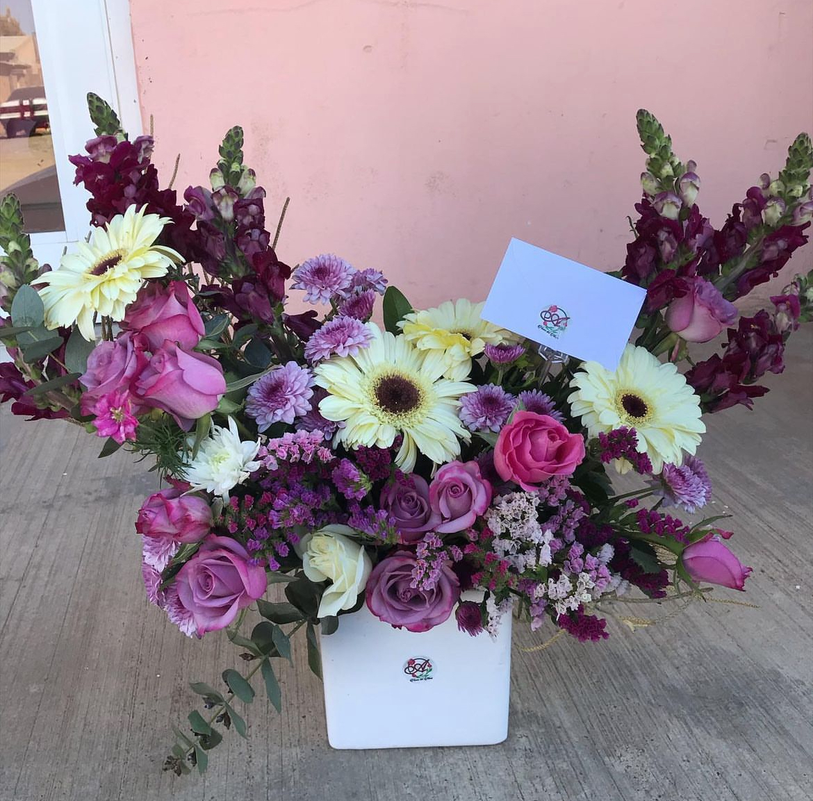
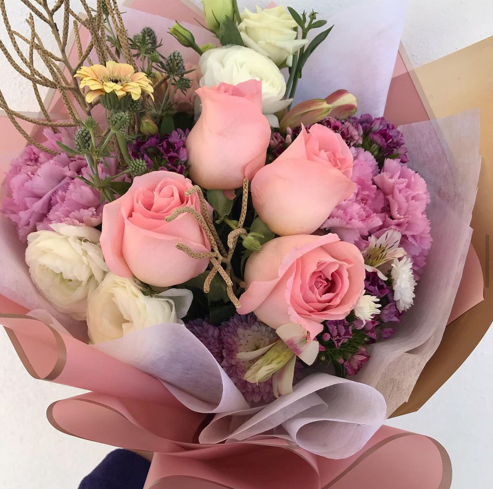
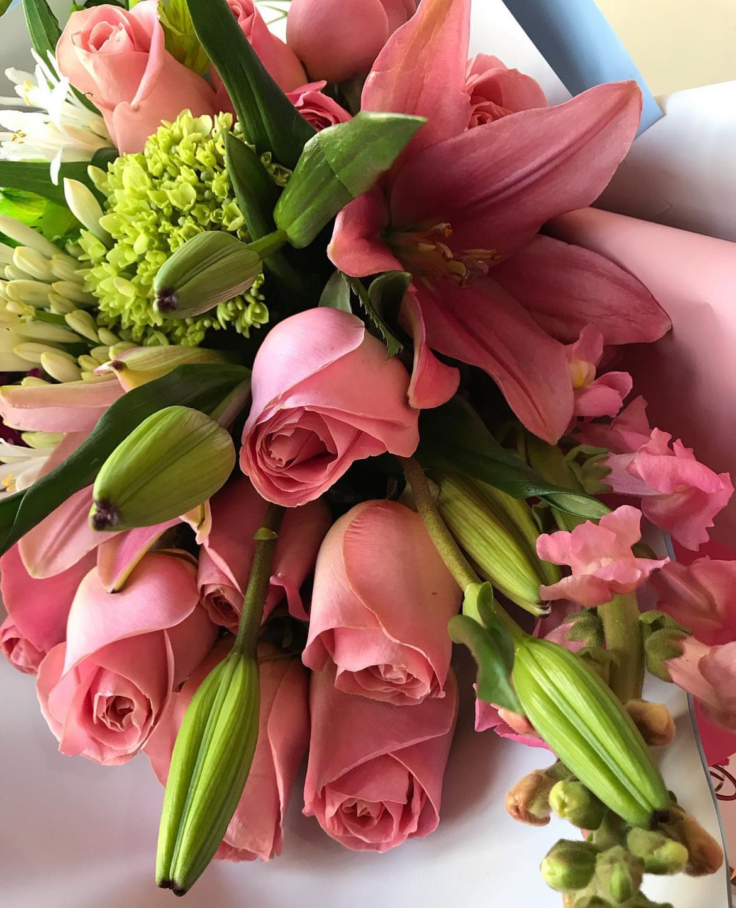

Descubre Nuestros Productos
Ofrecemos ramos personalizados, arreglos florales y mucho más. Puedes ver todos nuestros proyectos en nuestro Instagram _Floresdelalma.
Índice
Arreglos Florales
Nuestros arreglos florales están diseñados para ocasiones especiales como bodas, aniversarios, y celebraciones importantes.



Ramos
Los ramos de Flores del Alma son ideales para expresar tus sentimientos en cualquier momento especial.


Flores
Descubre nuestra selección de flores frescas y vibrantes, perfectas para decorar tu hogar o regalar a alguien especial.


